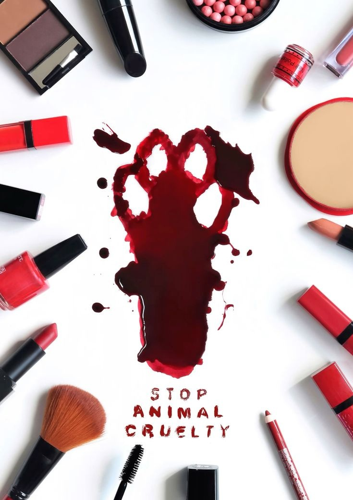
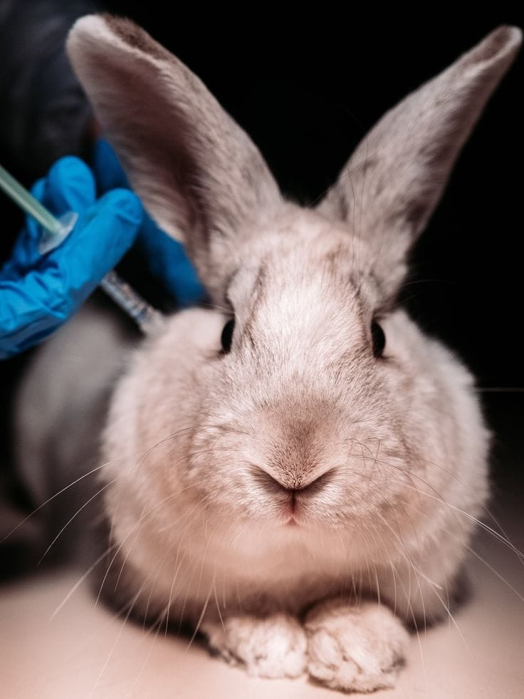
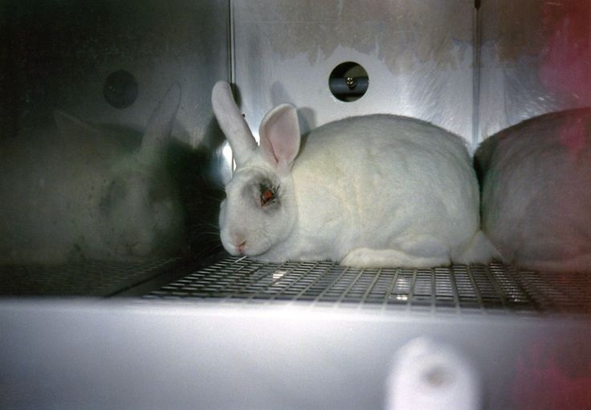

Opinion essay: Animal testing is it still necessary?
Animal testing has been used in science for many years to develop medicines and understand diseases. However, I believe that animal testing should be reduced and replaced with alternative methods whenever possible because it causes unnecessary suffering, modern technology can provide reliable results, and many experiments are not essential. What is most important is that scientific progress should not come at the expense of animal welfare.
The first reason is that animal testing can cause pain and stress to animals. Every year, millions of animals, including mice, rabbits, and monkeys, are used in laboratories around the world. According to the Humane Society International, many of these animals experience invasive procedures, confinement, and even death during experiments. Although some research has helped save human lives, many experiments are still carried out for products such as cosmetics. It is these unnecessary tests that should be replaced because safer alternatives already exist. Furthermore, many countries have banned cosmetic testing on animals, showing that change is possible.
Another reason is that science has developed new methods that can replace many animal experiments. Researchers can now use computer simulations, artificial intelligence, and human cell cultures to study diseases and test medicines. These methods are often faster, less expensive, and may provide more accurate results because they are based on human biology. For example, scientists have created organs-on-chips, which imitate the functions of human organs and help researchers understand how drugs affect the human body. Therefore, animal testing should only be considered when no reliable alternative is available.
Some people argue that animal testing is still necessary because it has contributed to important medical discoveries. While this is true in certain situations, scientists should continue investing in modern technologies that could reduce the need for animal experiments. What we should encourage is responsible research that protects both human health and animal welfare. In addition, improving these alternatives may lead to better scientific results in the future.
In conclusion, I believe animal testing should only be used as a last resort. It is essential that researchers continue developing ethical and effective alternatives that can reduce animal suffering while supporting medical progress. By investing in modern technology and responsible research, we can improve science without causing unnecessary harm to animals. Ultimately, it is compassion and innovation that should guide the future of scientific research.


